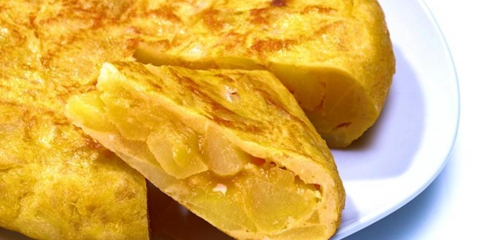

recipe: omelette

description
This omelette combines the flavor of potato and egg perfectly, a very easy and quick dish from Spain to make.
ingredients
-
oil of olive: 1 botle
- eggs: 6
- potatoes: 3 bigs or 6 litles
- salt
preparation
-
Remove the skin from the potatoes and cut them into small cubes.
-
In a frying pan, heat olive oil (the oil should cover the potatoes when placing them)
-
Fry the potatoes until they are soft inside and a little crispy on the outside.
-
Take out the potatoes and put them on paper so that the oil goes away.
-
Cut a medium onion into julienne strips and fry them until soft.
-
In a bowl, beat the eggs until they form bubbles.
-
Place the potatoes and onion in the bowl and stir.
-
Take a little oil from the pan and pour the mixture into the pan.
-
wait for the mixture to cook on one side and turn until it cooks again
-
serve and enjoy!